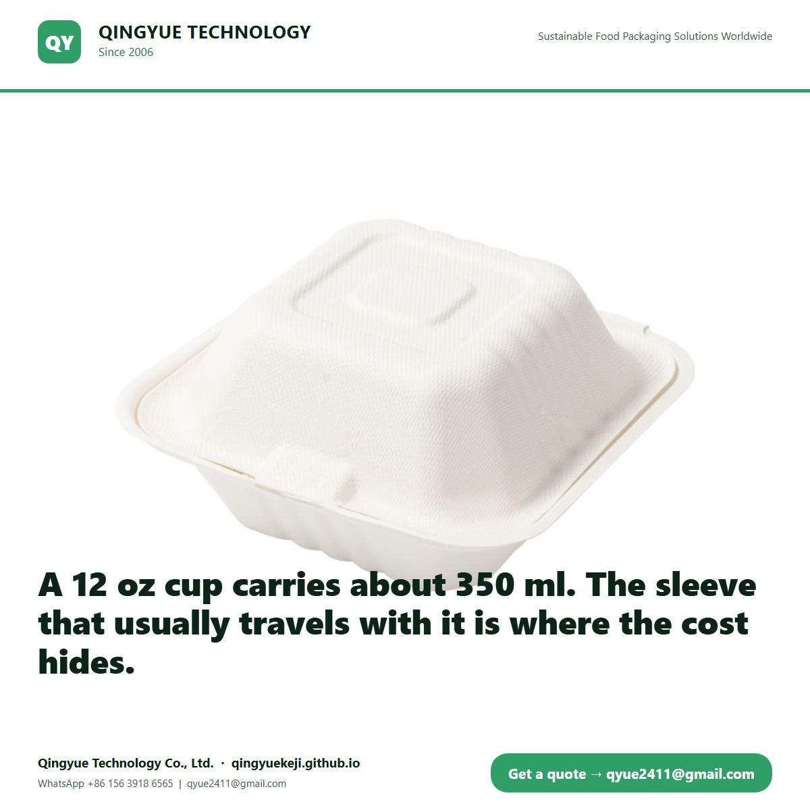
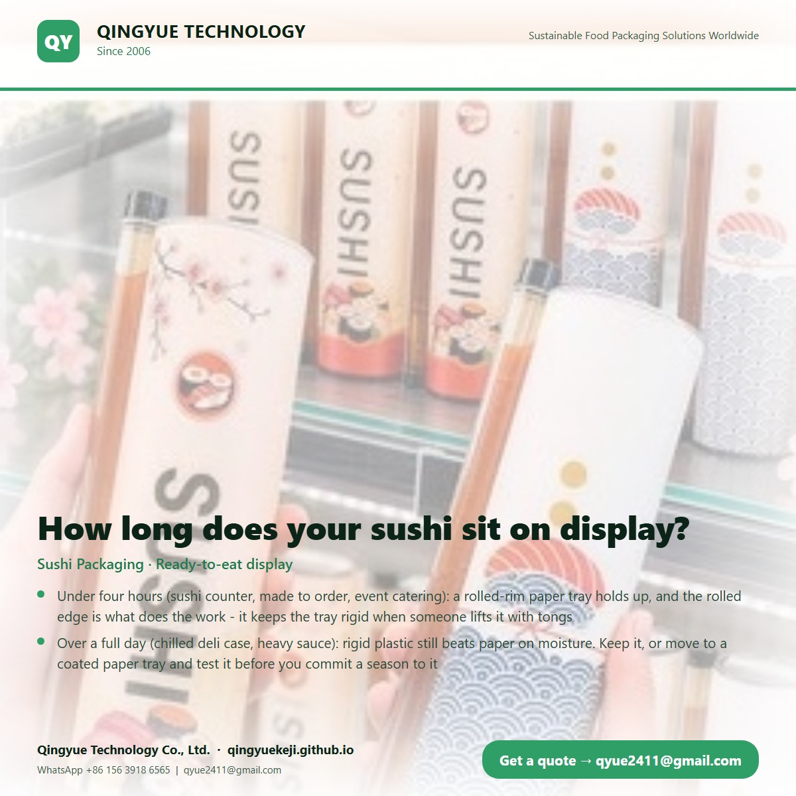
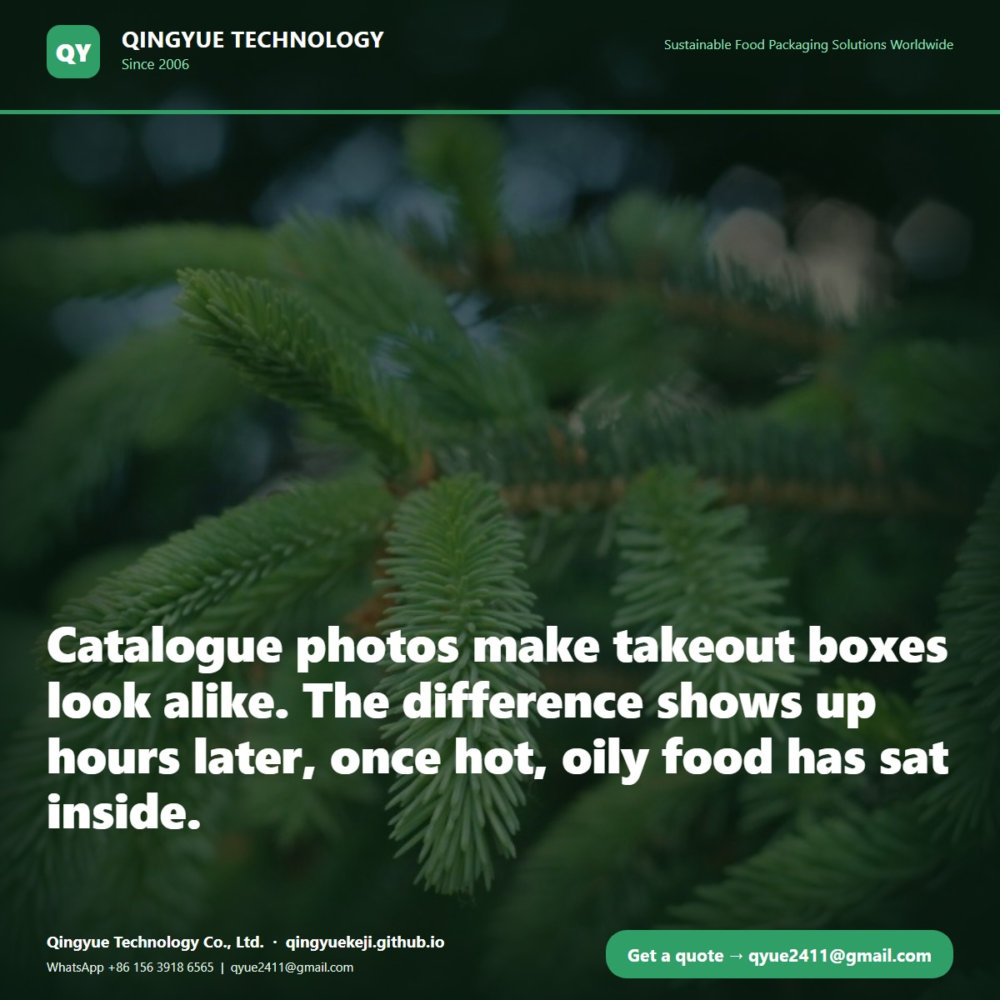
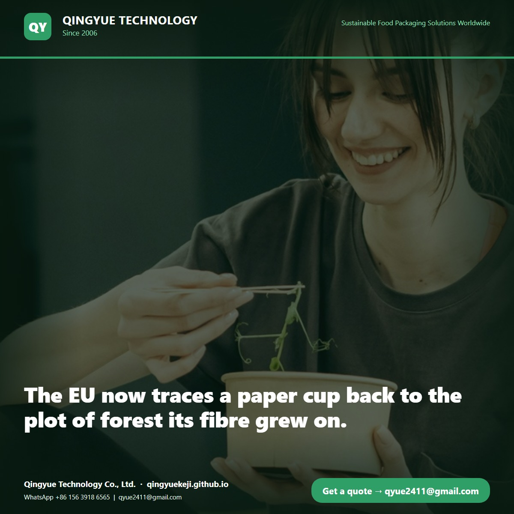
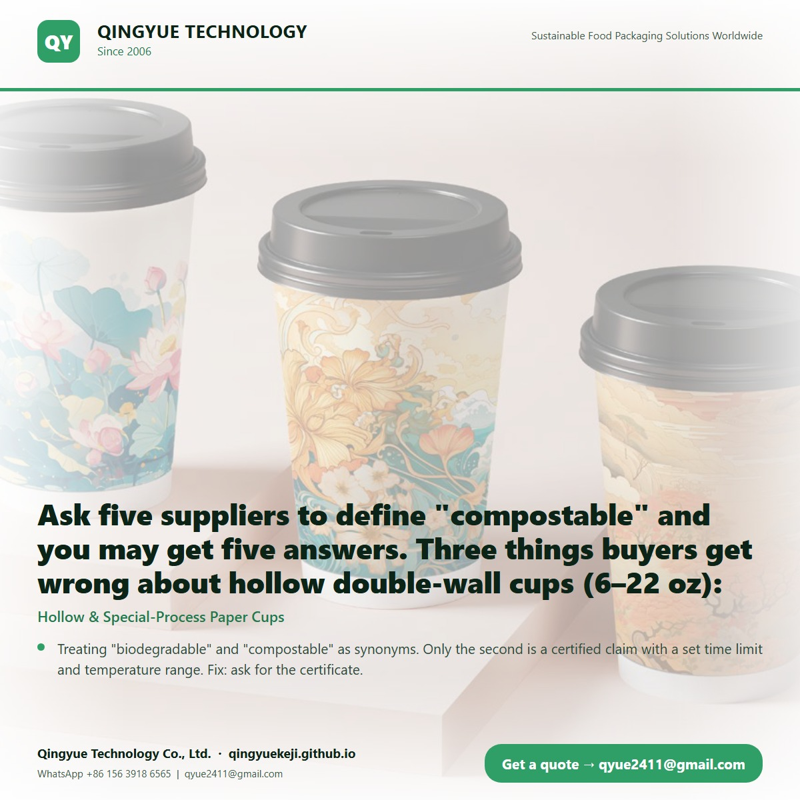

2026-10-20 · QSR & Fast Food
A 12 oz cup carries about 350 ml. The sleeve that usually travels with it is where the cost hides.
Hot coffee at that volume warms the wall within seconds, so single-wall paper normally ships with a sleeve: another line to stock, another motion at the counter. A hollow cup keeps a thin air layer between two paper walls, so the insulation is part of the product. PLA-lined paper handles hot drinks too, as long as its heat limit is written down. Plastic keeps the incumbent's place until a ban reaches your market. We export the paper options from a partner base. Send your hot and cold mix and we will compare them per serving. #QSR #PaperCups #FoodservicePackaging #PlasticVsPaper

2026-10-20 · QSR & Fast Food
A 12 oz cup carries about 350 ml. The sleeve that usually travels with it is where the cost hides.
Hot coffee at that volume warms the wall within seconds, so single-wall paper normally ships with a sleeve: another line to stock, another motion at the counter. A hollow cup keeps a thin air layer between two paper walls, so the insulation is part of the product. PLA-lined paper handles hot drinks too, as long as its heat limit is written down. Plastic keeps the incumbent's place until a ban reaches your market. We export the paper options from a partner base. Send your hot and cold mix and we will compare them per serving. #QSR #PaperCups #FoodservicePackaging #PlasticVsPaper

2026-10-15 · Rolled Rim Paper Sushi Tray / 卷边纸寿司托盘
How long does your sushi sit on display?
One number decides whether paper or plastic is the right tray for you - and it is the number most suppliers never think to ask for. - Under four hours (sushi counter, made to order, event catering): a rolled-rim paper tray holds up, and the rolled edge is what does the work - it keeps the tray rigid when someone lifts it with tongs - Over a full day (chilled deli case, heavy sauce): rigid plastic still beats paper on moisture. Keep it, or move to a coated paper tray and test it before you commit a season to it The part buyers do not expect a supplier to say out loud: if plastic is genuinely the right answer for your format, we will tell you. What paper changes even at four hours is the end of the journey. The tray travels from the cold case into the customer's hands and then into recycling - no liner to separate, no plastic a city may refuse to take. It also displays better: sushi, sides and light meals stay arranged and readable under the case lighting, which is most of what a deli counter is actually selling. Tell us how long your product sits and what goes in it. We will come back with the structure that fits your format, not the one that is easiest for us to sell. #PaperPackaging #SushiPackaging #FoodPackaging #ReadyToEat #SustainablePackaging

2026-10-14 · North America
Catalogue photos make takeout boxes look alike. The difference shows up hours later, once hot, oily food has sat inside.
Before you approve a compostable lunch box line for North America, ask three things: 1. A filled sample, not a flat swatch. Have it packed with hot food, sealed and left to sit; watch the corners and the lock. 2. The board and lining, named in writing. Water-based, PLA and PE linings handle grease differently, and "eco" is not a spec. 3. Proof behind the claim. If "compostable" is printed on the box, ask which standard the material was tested to, and whether the certificate covers that board-lining pair. We supply and export 800–2000 ml lunch boxes from a partner manufacturing base, with your choice of lock and print. Tell us what your kitchen fills them with. #TakeoutPackaging #FoodservicePackaging #Compostable #NorthAmerica

2026-10-08 · Europe
The EU now traces a paper cup back to the plot of forest its fibre grew on.
That is the plain version of the EU Deforestation Regulation (EUDR), and it answers the question European buyers keep sending us: does forest law really reach foodservice packaging? It can — paper cups, bags, boxes and napkins made with virgin wood fibre fall in scope. What changes for your next order is paperwork, not product. Before you book, check that your supplier can hand over chain-of-custody records and the geolocation-backed data behind their due-diligence statement, for that exact SKU. We supply and export these lines from a partner manufacturing base. Tell us the destination market; we will list which documents travel with the cartons. #EUDR #FSC #PaperPackaging #FoodservicePackaging

2026-10-04 · Hollow & Special-Process Paper Cups / 中空杯 / 特殊工艺中空杯
Ask five suppliers to define "compostable" and you may get five answers. Three things buyers get wrong about hollow double-wall cups (6–22 oz):
• Treating "biodegradable" and "compostable" as synonyms. Only the second is a certified claim with a set time limit and temperature range. Fix: ask for the certificate. • Assuming one label covers the whole cup. Board, lining and inks all reach the same waste stream. Fix: confirm OK Compost HOME covers your exact SKU and its print. • Expecting it to vanish anywhere. OK Compost HOME means breakdown in a home compost pile, not in landfill. Fix: match the claim to disposal guidance your market uses. Qingyue supplies and exports these cups; our partner base holds OK Compost HOME. Send your size and print brief for a quote. #CompostablePackaging #PaperCups #OKCompostHOME #FoodservicePackaging